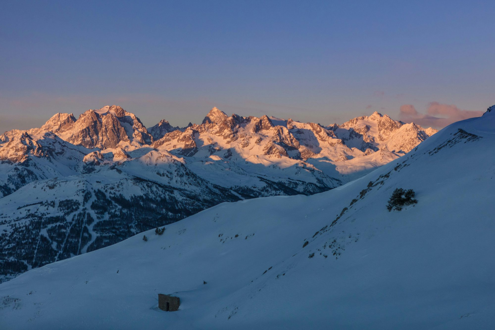

Understanding Snowboarding Styles
Snowboarding encompasses various styles, each offering unique challenges and experiences. Understanding these styles is crucial for any rider looking to improve their skills or explore different aspects of the sport.
Freestyle Snowboarding
Freestyle snowboarding is characterized by creativity and technical skill, often showcased in terrain parks. Riders engage with features like jumps, rails, and halfpipes, focusing on performing tricks and showcasing their style. Freestyle riders often spend hours perfecting their maneuvers, pushing the boundaries of what is possible on a snowboard.
The terrain park is a playground for freestyle enthusiasts, allowing them to experiment with different features and tricks. Riders often work on their jumps, spins, and grabs, aiming for a unique style that reflects their personality. The atmosphere in terrain parks is typically supportive, with riders cheering each other on and sharing tips to improve.
All-Mountain Riding
All-mountain riding emphasizes versatility, enabling snowboarders to navigate various terrains, from groomed trails to deep powder. This style allows riders to explore the entire mountain, adapting their techniques to suit changing conditions. All-mountain riders often develop a well-rounded skill set, making them comfortable in diverse environments.
Whether cruising down a groomed slope or weaving through trees, all-mountain riders thrive on the freedom of choice. This style encourages exploration and adaptability, creating a deeper connection with the mountain and its varying challenges. Riders learn to read the terrain, adjusting their approach to ensure an enjoyable ride.
Freeride Snowboarding
Freeride snowboarding takes adventure to new heights, focusing on natural terrain and off-piste exploration. Freeriders seek out untouched powder and rugged landscapes, often venturing into backcountry areas. This style requires a keen understanding of snow conditions, terrain features, and safety practices.
Freeriders enjoy the thrill of discovering new lines and experiencing the tranquility of nature away from crowded resorts. The sense of freedom that comes with exploring untouched snow is unmatched, and each descent feels like a personal adventure. Riders develop a strong sense of respect for the mountain, honing their skills in challenging conditions.
Alpine and Racing
Alpine snowboarding emphasizes precision and speed, often seen in racing events. Riders navigate specially designed courses with gates, focusing on carving techniques and maintaining momentum. Alpine snowboarding requires a different approach, emphasizing technical skills and body positioning to achieve optimal performance.
Racing not only tests speed but also strategy, as competitors must navigate the course with finesse. This discipline attracts those who thrive on competition, pushing themselves to achieve personal bests while enjoying the excitement of racing against others.
Essential Techniques for Snowboarding
Regardless of the style you choose, mastering fundamental techniques is key to becoming a proficient snowboarder. Here are some essential skills to focus on:
Balance and Stance
Maintaining balance is critical in snowboarding. A centered stance, with knees slightly bent, helps keep your weight distributed evenly. Your upper body should remain aligned with your lower body to enhance control. Avoid leaning too far back, as this can lead to loss of balance.
Practicing your stance and balance on flat terrain can build confidence before tackling steeper slopes. A strong foundation in balance will enhance your ability to carve turns and navigate various conditions.
Turning Techniques
Turning is a fundamental skill in snowboarding, and there are two primary methods: carving and skidding. Carving involves using the edges of your board to make smooth, controlled turns. To initiate a carve, shift your weight onto your toes or heels and lean into the turn while maintaining a balanced position. As you become more comfortable, aim for longer and more precise carves.
Skidding allows for quick directional changes, making it useful in navigating obstacles or steep terrain. To skid, press down on the edge of the board while keeping your weight centered. This technique enhances your ability to adapt to changing conditions and terrain features.
Stopping Techniques
Learning to stop safely is just as important as mastering turns. The heel-side stop is the most common method. Shift your weight onto your heels and lean back slightly while pressing down on the heel edge of the board. Practice this technique regularly to build confidence in your ability to stop on various inclines.
The Culture of Snowboarding
Beyond the techniques and styles, snowboarding encompasses a rich culture that fosters community and shared experiences. Snowboarding events, competitions, and festivals create opportunities for riders to connect, learn, and celebrate their passion for the sport.
The Community
Snowboarding culture thrives on inclusivity and support. Riders often form friendships based on shared experiences on the mountain. The camaraderie found among snowboarders is a vital aspect of the sport, fostering an environment where riders encourage one another to push their limits and try new things.
Events and Competitions
Snowboarding events, from local competitions to international championships, highlight the skill and dedication of riders. These events provide a platform for athletes to showcase their abilities while inspiring others in the community. The energy at these gatherings is infectious, creating an exciting atmosphere that celebrates the sport.
Embracing the Snowboarding Journey
Mastering snowboarding is a continuous journey filled with challenges and triumphs. Embrace the process of learning and improving, setting realistic goals for yourself along the way. Regular practice will build muscle memory and enhance your skills, making each ride more enjoyable.
Consider taking lessons from qualified instructors, especially if you're just starting or looking to refine your technique. Professional guidance can accelerate your learning curve and provide valuable insights into your riding style.
Conclusion: Ride with Passion
Snowboarding is a thrilling sport that combines skill, creativity, and a sense of adventure. By understanding the various styles and mastering essential techniques, riders can unlock the full potential of their snowboarding experience. Embrace the culture of snowboarding, connect with fellow riders, and enjoy every moment spent on the mountain. Whether you're carving down a groomed slope, exploring backcountry terrain, or hitting jumps in a terrain park, the joy of snowboarding awaits you. So gear up, hit the slopes, and ride with passion!